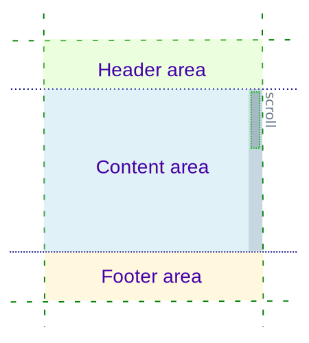
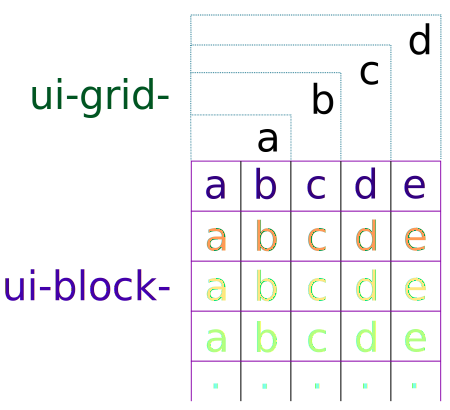

Application Visual Layout
The basic building block of an application UI in TAU library is the Page element which
confines all other elements. This is of course optional and extendible, so you can have
any element for grouping controls you want. If there is no page element in the markup
TAU will create one of its own. Example:
<span>I have no page</span>
As stated in the example above, there is no Page element so TAU creates it itself
and moves the content to that Page. This use case is fairly simple, but it is suitable
only for really simple scenarios.
To get the real power of managing pages, use multiple ones created by yourself. To
create a page you need to use the class attribute with a value ui-page. TAU uses
that information to properly acquire div element and bind the DOM element to its JavaScript
widget implementation.
<div class="ui-page">
Simple page
</div>
Whats in the Page?

The Page consists of:
- Header area- best way to mark out to the user what page is currently opened. It can contain buttons, menus and toolbars. Header is optional.
- Content area - place where the main application content, resides, it has an optional scrollbar.
- Footer area - here you can put a status line or buttons. Footer is optional.
All of the elements stated above are specified by a corresponding class attribute.
To specify a header element use class="ui-header" attribute:
<div class="ui-page">
<div class="ui-header">This is a header</div>
</div>
The specify a footer area use class="ui-footer" attribute:
<div class="ui-page">
<div class="ui-footer">This is a footer</div>
</div>
For main content use class="ui-content" attribute, here is an example with a header
and footer:
<div class="ui-page">
<div class="ui-header">MyApplication header</div>
<div class="ui-content">
Hello world!
</div>
<div class="ui-footer">Application status line</div>
</div>
Example above shows a full page structure. The header and footer can contain some other controls like buttons or tabbars.
Example usage of tabbar widget:
<div class="ui-page">
<div class="ui-header">
<div class="ui-tabbar" data-auto-change="false">
<ul>
<li><a href="#" class="ui-btn-active">First</a></li>
<li><a href="#">Second</a></li>
<li><a href="#">Third</a></li>
</ul>
</div>
</div>
<div class="ui-content">
This page has three tabs in the header.
</div>
</div>
Widget availability
Not all profiles contain same widgets, as in the example tabbar is only implemented in mobile.
Tabbar can be easily used as a page changing widget.
<div class="ui-page" id="first">
<div class="ui-header">
<div class="ui-tabbar" data-auto-change="false">
<ul>
<li><a href="#first" class="ui-btn-active">First</a></li>
<li><a href="#second">Second</a></li>
<li><a href="#third">Third</a></li>
</ul>
</div>
</div>
<div class="ui-content">
First page
</div>
</div>
<div class="ui-page" id="second">
<div class="ui-header">
<div class="ui-tabbar" data-auto-change="false">
<ul>
<li><a href="#first">First</a></li>
<li><a href="#second" class="ui-btn-active">Second</a></li>
<li><a href="#third">Third</a></li>
</ul>
</div>
</div>
<div class="ui-content">
Second page
</div>
</div>
<div class="ui-page" id="third">
<div class="ui-header">
<div class="ui-tabbar" data-auto-change="false">
<ul>
<li><a href="#first">First</a></li>
<li><a href="#second">Second</a></li>
<li><a href="#third" class="ui-btn-active">Third</a></li>
</ul>
</div>
</div>
<div class="ui-content">
Third page
</div>
</div>
This works because TAU opens (makes visible) the page which id attribute corresponds
to page #hashtag. This is basic page routing, more on that subject will be covered in
basic page routing chapter.
As said earlier, more widgets can be placed in header/footer areas, like buttons or images. An example of a multi line title bar with a gear button and a home icon is as follows:
<div class="ui-page">
<div class="ui-header">
<h1>MyApplication</h1>
<span class="ui-title-text-sub">pure awesomeness</span>
<button type="button" class="ui-btn" data-inline="true" data-icon="gear"></button>
<button type="button" class="ui-btn" data-inline="true" data-icon="home" data-iconpos="right"></button>
</div>
<div class="ui-content">MyApplication content</div>
</div>
Grids
Grids are a great way to group UI elements or display tabular data. Using grids is easy and consists of using proper classes only.
Grid helper
Grid functions are exported in tau.util object if there is any need for creating grids
directly from JavaScript.
To create a simple grid of two columns with size 50%/50% use a class ui-grid-a on
the container and ui-block-a on the first column and ui-block-b on the second.
<div class="ui-page">
<div class="ui-content">
<div class="ui-grid-a">
<div class="ui-block-a">One</div>
<div class="ui-block-b">Two</div>
</div>
</div>
</div>

The grid container classes are named alphabetically, meaning that:
- two-column layout class is
ui-grid-a - three-column layout class is
ui-grid-b - four-column layout class is
ui-grid-c - five-column layout class is
ui-grid-d
The grid column classes are also named alphabetically:
- first column class is
ui-block-a - second column class is
ui-block-b - third column class is
ui-block-c - fourth column class is
ui-block-d - fifth column class is
ui-block-e
So for example, for a simple calculator keyboard app we would use a 3x4 grid with 10 buttons.
<div class="ui-page">
<div class="ui-content">
<div class="ui-grid-b">
<div class="ui-block-a"><button type="button" data-style="circle">7</button></div>
<div class="ui-block-b"><button type="button" data-style="circle">8</button></div>
<div class="ui-block-c"><button type="button" data-style="circle">9</button></div>
<div class="ui-block-a"><button type="button" data-style="circle">4</button></div>
<div class="ui-block-b"><button type="button" data-style="circle">5</button></div>
<div class="ui-block-c"><button type="button" data-style="circle">6</button></div>
<div class="ui-block-a"><button type="button" data-style="circle">1</button></div>
<div class="ui-block-b"><button type="button" data-style="circle">2</button></div>
<div class="ui-block-c"><button type="button" data-style="circle">3</button></div>
<div class="ui-block-a"><button type="button" data-style="circle">0</button></div>
<div class="ui-block-b"></div>
<div class="ui-block-c"></div>
</div>
</div>
</div>